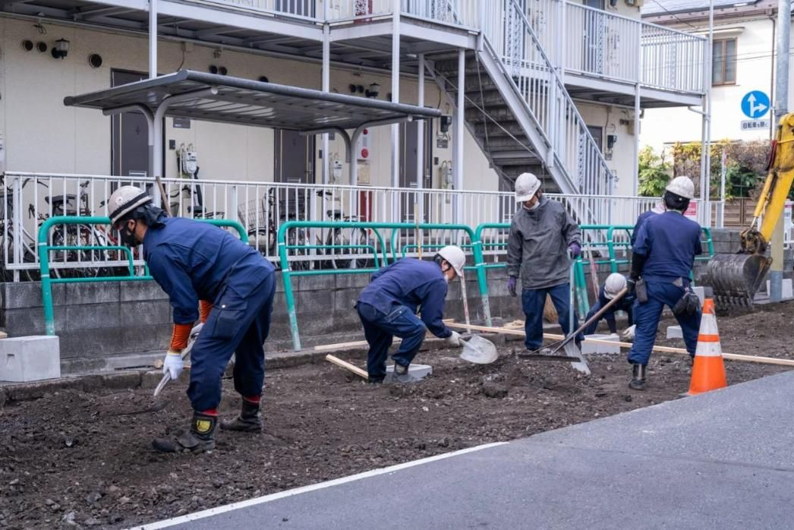

TP-03 写真は承認後に差替
SALES / Tさん
「分からない」から、一つずつ。
土木を学んでいなかったところから入社。現場に足を運び、先輩の仕事を見て、人との関わりを通して知識を増やしてきました。
ONE TEAM, DIFFERENT STORIES
得意なことも、仕事の覚え方も、人によって違います。久留米興業が大切にしているのは、全員を同じ型にはめることよりも、それぞれが自分の役割を果たしながら協力すること。
違う経験を持つ人が集まっているからこそ、現場で気づくこと、取引先に伝えられること、次の仕事につなげられることがあります。


MESSAGE / PRESIDENT 代表取締役 川島 和範
18歳で入社し、現場から管理、そして経営へ。順調な時期ばかりではなかった経験が、現在の会社づくりへの考えにつながっています。
川島代表は、高校卒業後に久留米興業の現場で働き始めました。仕事の厳しさを感じて一度会社を離れた後、再び現場へ戻り、管理職や取引先との関係づくりを経験。40代で代表となり、会社全体の仕事と社員の働き方に向き合っています。
会社が続くためには、仕事を得るだけでなく、そこで働く人が長く力を発揮できる環境も必要です。仕事と生活のバランス、人とのつながり、社員一人ひとりの個性。そうした考えを、久留米興業のこれからにつなげようとしています。
最後に、ここで働いて良かったと
思ってもらえる会社へ。
SALES TEAM 営業職
取引先の相談を受けること、現場の状況を知ること、必要な人や材料、工程をつなぐこと。久留米興業の営業職には、業界未経験から仕事を覚えてきた社員もいます。
土木を学んでいなかったところから入社。現場に足を運び、先輩の仕事を見て、人との関わりを通して知識を増やしてきました。
異業種の営業から土木業界へ転身。資格の学習を重ね、現在は公共工事を担当する現場代理人として役割を広げています。
異業種での経験を土台に、図面や現場の専門知識を学びながら、新しい役割に挑戦してきました。
STORY / Nさん
前職は土木とは別の業界で営業をしていました。将来に残る専門性を身につけたいと考え、未経験で久留米興業へ。最初は分からない言葉も多いなか、現場の人に学び、資格取得にも挑戦しました。今は公共工事の現場代理人として、協力会社との調整や近隣対応などに関わっています。営業として培った対話力と、現場で身につけた知識の両方を生かしている社員の一人です。
【取材・承認待ち】TさんとIさんの詳細（入社理由／最初の壁／今の仕事／これから）は、既存インタビューを本人確認したうえで、Nさんと同じ形式で追加します。Nさんの資格取得の過程、Iさんの初期の苦労など、難しかった面も本人確認後に含めます。
FIELD TEAM 現場職
舗装の敷きならしや転圧、機材の準備、周囲の安全確認。道路や水道に関わる工事は、多くの役割が重なって進んでいきます。
久留米興業の現場では、経験のある社員の仕事を見て学び、少しずつできることを増やすことが求められます。現場を支えている一人ひとりの仕事や考えを、写真とともにご紹介します。


取材質問：入社前の職種／最初の一か月に大変だったこと／初めて任された仕事／今できること／現場で言葉を交わす瞬間／仕事の誇り／誰に向いているか／改善したい点。該当する社員がいるかを確認のうえ実施します。
WORKING TOGETHER 営業と現場
工事の相談を受け、必要な情報を整理する営業職。現場の状況を把握し、実際の施工を進める現場職。互いの仕事が分かるほど、予定や課題を共有しやすくなります。久留米興業が大切にする「人とのつながり」は、社内の仕事にも表れています。
営業
営業＋現場
現場
営業・現場の両方
案件によって流れや分担は異なります。
OUR TEAM IN NUMBERS 社員データ
どのような経験や年代の人が働いているのか。社員データをまとめました。
【要確認】基準日、対象範囲（正社員／役員／パート／協力会社を含むか）、総数、丸め方。公開されている社員数は37人（採用サイト）と30人（行政情報）で一致していません。勤続年数別・異業種入社割合は裏付けがある場合のみ追加。数値の表を併記し、カウントアップ演出は使いません。
社員一人ひとりの経験や考えを知ったら、どのような仕事があり、どんな環境で働くのかも見てみてください。